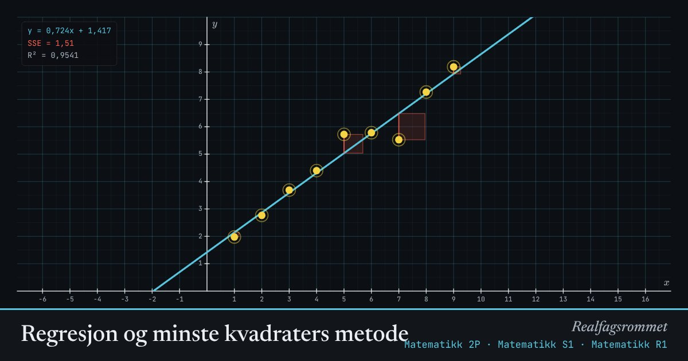

Regresjon og minste kvadraters metode
Regresjon finner kurven som gjør summen av de røde kvadratene minst mulig. Dra punktene og se kvadratene og kurven endre seg sammen.
Start animasjonen
Formler
Om animasjonen
Avstanden fra et punkt til kurven kalles et residual. Hvert rødt kvadrat har residualet som side.
Regresjonskurven er den som gir minst samlet areal. Derfor heter det «minste kvadraters metode».
forteller hvor mye av variasjonen modellen forklarer. 1 betyr at alle punktene ligger på kurven.
Den eksponentielle modellen finnes ved å gjøre lineær regresjon på . Derfor må alle -verdiene være positive.
Prøv dette
- Flytt ett punkt langt bort. Hvor mye endres linjen? Hvorfor trekker et fjernt punkt så mye?
- Lag data som passer best med en eksponentiell modell. Sammenlign for de tre modellene.
- Kan være høy selv om modellen er dårlig for å spå fremtiden?
- Legg alle punktene på en rett linje. Hva blir SSE?
Kompetansemål
- Matematikk 2P: Regresjon og modeller av data
- Matematikk 2P: Lineære og eksponentielle modeller
- Matematikk R1: Modeller av reelle datasett